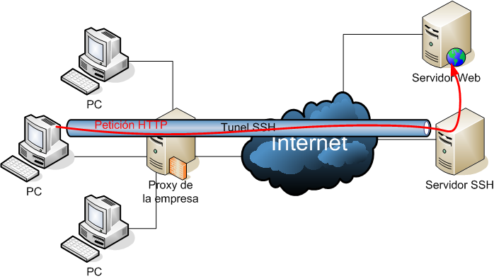

La tunelización es un concepto fundamental en redes de computadoras y seguridad de la información. Se utiliza para encapsular un tipo de tráfico en otro tipo de red, permitiendo que datos de un protocolo se transporten a través de una red diferente.
Es una técnica que se utiliza para encapsular y proteger datos mientras se transmiten a través de una red. Consiste en envolver los datos originales en un "túnel" que utiliza un protocolo de red diferente para su transporte.
 Tunel.Objetivos de la Tunelización
- Seguridad: Uno de los objetivos principales de la tunelización es proporcionar un canal seguro para la transmisión de datos a través de redes inseguras, como Internet.
- Compatibilidad de Redes: Permite que diferentes tipos de redes coexistan y se comuniquen de manera eficiente, incluso si utilizan protocolos incompatibles.
Componentes Clave
- Encabezados de Túnel: Durante la tunelización, se añaden encabezados específicos al paquete de datos original. Estos encabezados contienen información necesaria para el transporte a través del túnel.
- Punto de Entrada y Punto de Salida del Túnel: Estos son los extremos del túnel donde se realiza la encapsulación y la decapsulación. El punto de entrada encapsula los datos y los envía a través del túnel, mientras que el punto de salida los extrae y los entrega al destino final.